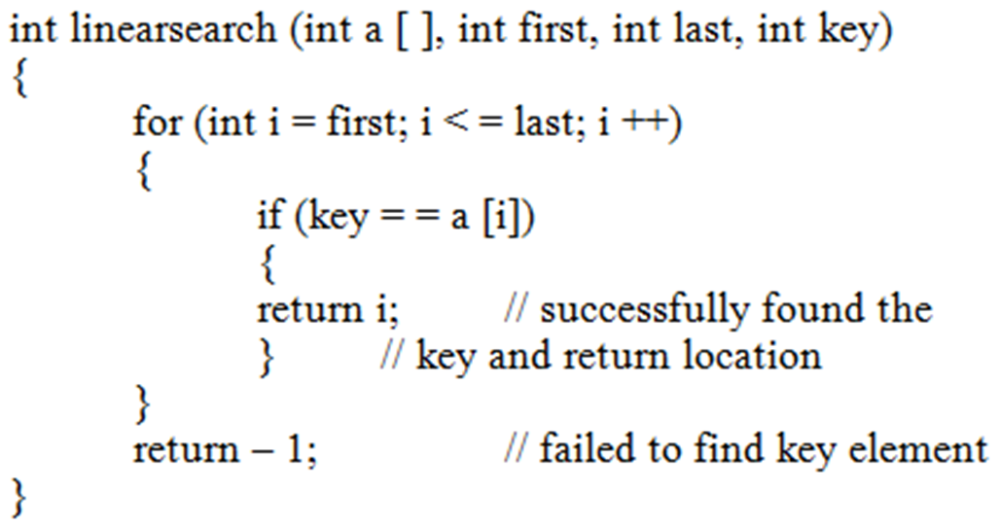
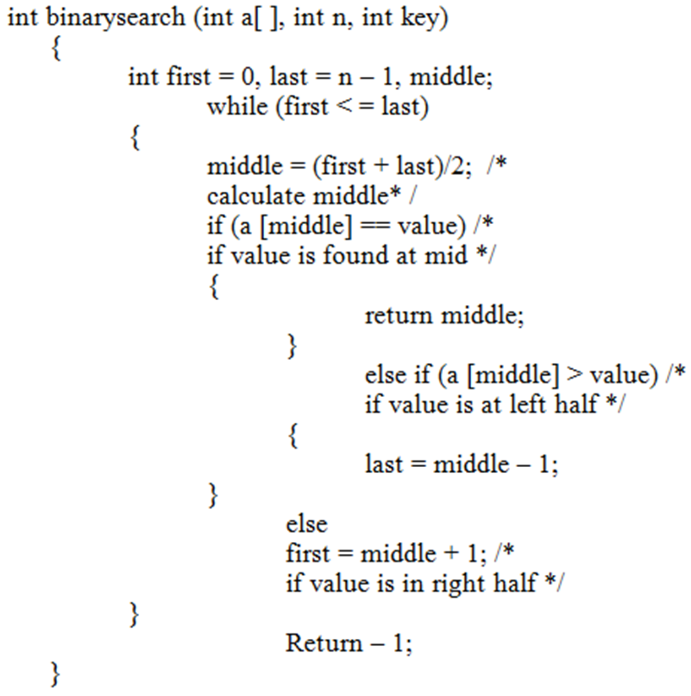

Searching & Sorting
Searching
There are two types of search algorithms:
- Linear Search (Sequential Search)
- Binary Search
Linear Search
- Linear Search is the simplest method to solve the searching problem.
- Linear search has no assumptions about the order of the list.
- It finds an item in a collection by looking for it from the beginning of array and looks for it till the end. It returns the first position (index) of an item whenever it finds.

Binary Search
- Binary search assumes the list is already in order.
- In each step, binary search algorithm divides the array into three sections.
- Finds the Middle element
- Considers only left side elements of middle elements if the searching element is less than middle
- Considers only right side elements of middle elements if the searching element is greater than middle.

Sorting
Sorting is ordering a list of elements.
Types of sorting: There are many types of algorithms exist based on the following criteria:
- Based on Complexity
- Based on Memory usage (Internal & External Sorting)
- Based on recursive/non-recursive implementation
- Based on stability
- Based on comparison/non-comparison, etc.
Internal Sorting: : If the number of elements is small enough to fits into the main memory, sorting is called internal sorting. Bucket sort, Bubble sort, Insertion sort, Selection sort, Heap sort, and Merge sort are internal sorting algorithms.
External Sorting: If the number of elements is so large that some of them reside on external storage during the sort, it is called external sorting. External merge sort, and shell sort (Bucket sort) are external sorting algorithms.
In-place Sorting: The in-place sorting algorithm does not use extra storage to sort the elements of a list.
Stable Sorting: Stable sorting algorithm maintain the relative order of records with equal values during sorting.